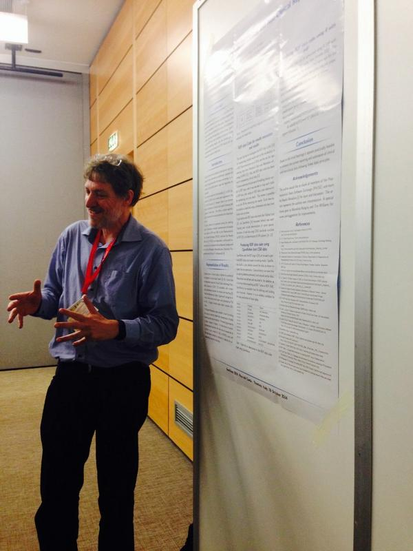
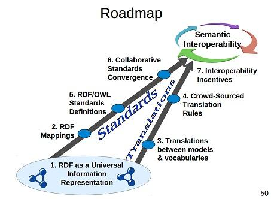
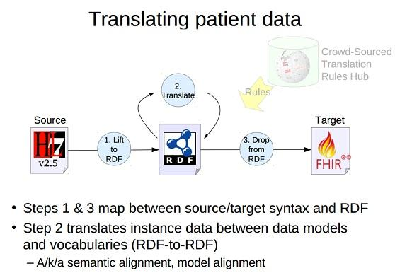
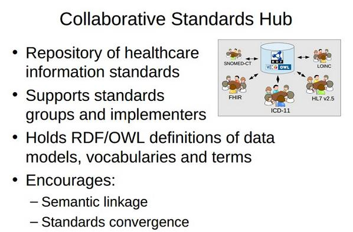

October 2014
“We believe that information identity is a new discipline in its own righ” --@ukodi and @thomsonreuters theodi.org/guides/data-id… #linkeddata
My best RTs this week came from: @CDISC @tomayac @speakman @gray_alasdair @timctes #thankSAll via sumall.com/thankyou
Yosemite Manifesto proposing RDF as a Universal Healthcare Exchange Language kerfors.blogspot.se/2014/10/rdf-as…
Excellent blog post -> RT @ABLVienna: #LinkedData meets #datascience datasciencecentral.com/profiles/blogs… #DataScienceCentral
@nick_lynch yepp, I'm working on a report/blog post from it based on my live blog storify.com/kerfors/iswc20…
New blog post: Yosemite Manifesto proposing RDF as a Universal Healthcare Exchange Language kerfors.blogspot.se/2014/10/rdf-as… HT @SemanticWeb
Bookmarked: "Disease Ontology 2015 update: an expanded and updated database of human diseases for linking biomed... ift.tt/1tegEdo
"'probabilistic bottom-up' rather than top-down approach to index a company's data" searchcio.techtarget.com/news/224023345… about @Tamr_Inc via @searchCIO
+1 MT @idreamxyz: Explaining #MachineLearning and #DataMining to non Computer Science people qr.ae/Dojug via @mjcavaretta
Final touch on my live blog storify.com/kerfors/iswc20… from five intensive days last week at #iswc2014 in lovely Riva del Garda
To read #icbo2014 Clinical Data Wrangling using Ontological Realism ... referent-tracking.com/RTU/sendfile/?… (paper) referent-tracking.com/RTU/sendfile/?… (slides)
How I did on Twitter this week: 13 Mentions, 4.81K Mention Reach, 23 Replies, 95 Retweets. How'd your week go? via sumall.com/myweek
My best RTs this week came from: @nxtstop1 @danbri @peterkz_swe @ayirpelle @iswc2014 #thankSAll via sumall.com/thankyou
@MisCritIT Thx will do. I've included it in my Storify storify.com/kerfors/iswc20… and will highlight it in my coming blog post
#RDF #LinkedData in many of the most used languages such as Java, Perl, JavaScript seems to be a #iswc2014 theme eg github.com/kjetilk/RDF-Li…
Very nice!! NXP semiconductor @NXPdata releases today their Linked Open Data data.nxp.com Kudos to @wohnjalker
@isocoLab @josemanuelgp Excellent talk!! Please can you publish the slides on Slideshare so they are picked up on eventifier.com/event/iswc2014…
I hope #iswc2014 industry track speakers publish therir great slides, preferable on Slideshare so they're picked up eventifier.com/event/iswc2014…
"Paying attention to identifiers (URIs) schemes" is THE key principle says @Nigel_Shadbolt #iswc2014 keynote iswc2014.semanticweb.org/keynote_nigel_…
Slides from the International Semantic Web Conference #iswc2014 via Eventifier eventifier.com/event/iswc2014…
Justification terms for mapping chemical entities openphacts.org/specs/2013/WD-… So what terms make sense for other kinds of entities? #iswc2014
Great #iswc2014 talk by @gray_alasdair on scientific lenses. How about a similar approach for terminiolgy mappings? slideshare.net/kerfors/cim2014
Traceability in pharma supply chains using Global Business Language and RDF PROVO-O #iswc2014 gs1.org github.com/lidingpku/iswc…
Hmm, in teresting buzz from the Semantic Sensor Network #ssn2014 #iswc2014 knoesis.org/ssn2014/ Will have a lok at w3.org/2005/Incubator…
Very nice slide deck -> MT @primpap: "A Semantic Context-Aware Privacy model for @Face_Block" bit.ly/privon14facebl… #iswc2014 #provon2014
Really cool #privon2012 #iswc2014 presentation of the paper: A Semantic Context-aware Privacy Model for @Face_Block docs.google.com/viewer?a=v&pid…
Slides from @timFinin's excellent keynote "Semantics for Privacy and Context" in #privon2014 #iswc2014 workshop ebiquity.umbc.edu/resource/html/…
More deja vu today #privon2014 #iswc2014 @timFinin' keynote thinking of my CSCW/MobileInformatics work in late 90ies researchgate.net/publication/22…
Sorry I missed hands-on tutorial #iswc2014 @ApacheMarmotta, will look at @wikier's slides on Linked Data Platform slideshare.net/Wikier/introdu…
You can follow my second day at #iswc2014 via storify.com/kerfors/iswc20… just now I'm ilistening to keynote on Genometric query language #GMLQ
#iswc2014 #cimsw2014 Checkout what the #rstat community,@rdpeng @jtleek , do for Piketty data github.com/jtleek/capital…
#NoteToSelf Conference Tweeting: Do not start tweet with @ symbol aliem.com/making-confere… #iswc2014
Nice! #iswc2014 #cimsw2014 @pgroth bring up @Tamr_Inc great blog post: Why Data Curation Matters The Piketty Panic tamr.com/data-curation-…
The #cimsw2014 #iswc2014 workshop on Context reminds me of my CSCW/Mobile Informatics PhD research in the late 90ies researchgate.net/publication/23…
I like the idea of Linked Open Contex by @rhiaro Looking forward reading about her really nice "half-baked ideas" macs.hw.ac.uk/~fm206/cim14/c…
@karima_rafes Thx for nice tweets with illustrative pics. I'll include them in my Storify later on storify.com/kerfors/iswc20…
The Justification Vocabulary used by @Open_PHACTS I was refeering to in my #cimsw2014 #iswc2014 presentation openphacts.org/specs/2013/WD-…
Lokking forward to present at #iswc2014 #cimsw2014 A Justification-based Semantic Framework for Terminology Mappings slideshare.net/kerfors/cim2014
In #iswc2014 and I see this in my feed HT @pmackay Ebola open data resource eboladata.org <- How can #LinkedData help??
Looking forward to discuss a Justification Vocab for Mapping Terminologies in #iswc2014 workshop this am macs.hw.ac.uk/~fm206/cim14/ #EHR4CR
MT @rtroncy: #PROV w3.org/TR/prov-overvi… strikes again in how Istat is modeling statistics classification in #RDF #semstats2014 #isec2014
I'm pointing a pharma colleague from Eli Lilly at #iswc2014 to W3C Provenance w3.org/TR/prov-overvi… and RDF Shapes w3.org/2014/data-shap…
This looks really interesting also for clinical data-> Dealing with Data Diversity in a Smart City Data Hub slideshare.net/mdaquin/dealin… #iswc2014
Cool idea to use Statistical Linked Data for News Fact-checking semstats2014.files.wordpress.com/2014/10/semsta… #semstats2014 poster at #iswc2014
Marc Andersen presents poster at #semstats #iswc2014 on linked data for clinical reporting semstats2014.files.wordpress.com/2014/10/semsta…

MT @gray_alasdair: Licenses need to become machine processable, we use ODRL vocab @mdaquin #iswc2014 #SmartCities w3.org/ns/odrl/2/
#iswc2014 #semstat keynote, Emanuele Baldacci, Statistical Offices embracing Linked Open Data istat.it/en/about-istat… requires new LOD skills
First morning at my first #semanticweb conference #ISWC2014 in lovely Riva del Garda. See my Storify for highlights storify.com/kerfors/iswc20…
How I did on Twitter this week: 3 Mentions, 1.42K Mention Reach, 5 Replies, 15 Retweets. How'd your week go? via sumall.com/myweek
Roadmap for Interop --David Booth Yosemite Project A Roadmap for Healthcare Info Interop dbooth.org/2014/yosemite/… …

How RDF Helps Translations -David Booth Yosemite Project A Roadmap for Healthcare Info Interop dbooth.org/2014/yosemite/…

How RDF Helps Standards -- David Booth, Yosemite Project A Roadmap for Healthcare Info Interop dbooth.org/2014/yosemite/…

140+ attendees now in @SemanticWeb webinar The Yosemite Project: An RDF Roadmap for Healthcare Information Interop semanticweb.com/webinar-yosemi…
Re-tweeting my eralier RT @LTatakis: #VoID Editor can now allow the dataset description of Non-RDF datasets! voideditor.cs.man.ac.uk
MT @automile_io: Learn How did @automile_io journey start? Interview of Automile founder ow.ly/yX8j0 <- Cool HT @olofbelfrage
MT @egombocz: New tech transforms transparency into privacy zite.to/1st0ug1 #InfoAccountability #httpa
Research Concepts, next layer in @cdiscSHARE mungingmetadata.blogspot.se/2014/09/value-… Similar to the #FHIR/#openEHR archetypes? issuu.com/pulseitmagazin…
Cool - Is this the perfect match?? @phillord's #rstats together with #Ontologies in OWL/RDF github.com/phillord/tawny… HT @jschneider
Excellent work by @cdsouthan related to openinnovation.astrazeneca.com Digging out more @AstraZeneca repurposing structures lnkd.in/dH7cjgp
David Handelsman @dWiseTech : “How Transparency is Changing the Way an Entire Industry Thinks about Data” #PhUSE14 phuse.eu/annual-confere…
"favorit i repris": For Big-Data Scientists, ‘Janitor Work’ Is Key Hurdle to Insights nyti.ms/1p3ZoqI cc: @adbkp #DataJanitor
Booked the last leg of my travel on Saturday to @iswc2014 from Verona to Riva del Garda iswc2014.semanticweb.org Looking forward #iswc2014
Looking at the awesome @iswc2014 program iswc2014.semanticweb.org/program_glance… kicking off next Sunday #iswc2014
"Make tracking something that we do to the people who use our data." --@timberners_lee gu.com/p/42953/tw #InfoAccountability
Had to wait 15 mins for the train - watched a great #APIconUK video
youtu.be/fJCtaNRxg9M #LinkedData #jsonld #hydra by @MarkusLanthaler
youtu.be/fJCtaNRxg9M #LinkedData #jsonld #hydra by @MarkusLanthaler
Yet another rainy morning on the bus enyoing #APIconUK video on #LinkedData #API youtu.be/-1e0EdmOlWE this one with @MarkusLanthaler
MT @fredtrotter: Here is the CDISC website cdisc.org #DocGraph <- and here is RDF version of the stds github.com/phuse-org/rdf.…
#PhUSE14 program: "A Day in the Life of an RDF Curator", "Primer: Converting Analysis Results Data to RDF Data Cubes" phuse.eu/download.aspx?…
Clarifying blog on @EMA_News's data sharing policy blogs.bmj.com/bmj/2014/10/07… via @tlassers Still unclear: CSR PDFpages? Summary level datasets?
Watch a nice #APIconUK video "Case Study: A Real-World Implementation of #LinkedData" with @dvh youtu.be/L7TCCN3stWc
MT @programmableweb: 19 Videos from #APIconUK api.pw/1s6FU68 #IoT #API #LinkedData pic.twitter.com/Rp85n6ZV1z
#CDISC Interchange 2014 program "Creating RDF from CDASH" and "Delivering Statistical Results as an RDF Data Cube" cdisc.org/system/files/a…
Developer Zone for @NobelPrize offers open data in two ways: An API and as Linked Data nobelprize.org/nobel_organiza… #apise #lankadedata #oppnadata
"metadata visibility" --@HomesAtMetacoda How about using RDF to describe SAS datasets similar as #CDISC standards github.com/phuse-org/rdf.…
. @fjmanion Any clinical trial data vendors at #icbo2014 icbo14.com ? e.g @SASsoftware @dWiseTech @Medidata @Quintiles @Parexel
.@EMA_News "download, print and save the information" ema.europa.eu/ema/index.jsp?… => CSR PDF pages? Summary level data sets? #alltrials #ctdata
Nice blog post #DataCuration -> MT @Tamr_Inc: Why Piketty's next book may take 2 years instead of 10 hubs.ly/y0bYr-0
Cool -> Facebook #itjobs #techjobs: "Defining domain solutions based on semantic standards (RDF/RDFS/OWL)" bit.ly/1vJ82ws
MT @jpmccu: Frank Manion presenting an ontology-based model of informed consent #icbo14 cbil.upenn.edu/node/82
I've registered for the webinar:The Yosemite Project - An RDF Roadmap for Healthcare Information Interoperability semanticweb.com/webinar-yosemi…
CDISC and XML expert Jozef Aerts makes a great point about CDISC Unit codes "The meaning of Unit" cdisc-end-to-end.blogspot.co.at